flare.cd.df$control_cat<-cut(flare.cd.df$control_8,c(0, 13, 16), labels =c("0-12", "13-16"), include.lowest =TRUE, right =FALSE)fit<-survfit(Surv(softflare_time, softflare)~control_cat, data =flare.cd.df)p<-ggsurvplot(fit, data =flare.cd.df, conf.int =TRUE, pval =TRUE, pval.method =TRUE, ggtheme =theme_minimal(), risk.table =TRUE, legend.title ="IBD Control-8", palette =c("#1A8FE3", "#E76D83"), xlab ="Time from study recrutiment (days)", title ="Time to clinical flare", break.time.by =200)cairo_pdf("plots/cd/soft-flare/ibd/control-8.pdf")pinvisible(dev.off())png("plots/cd/soft-flare/ibd/control-8.png", width =7, height =7, units ="in", res =300)pinvisible(dev.off())p
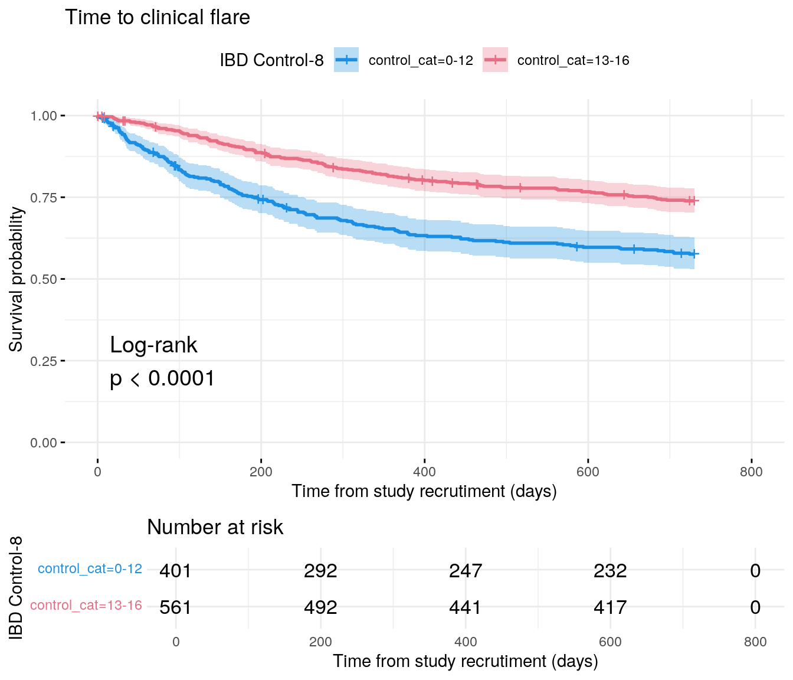
Code
fit.me<-coxph(Surv(softflare_time, softflare)~Sex+IMD+cat+control_8+frailty(SiteNo), control =coxph.control(outer.max =20), data =flare.cd.df)invisible(cox.summary(fit.me))
Warning: `gather_()` was deprecated in tidyr 1.2.0.
ℹ Please use `gather()` instead.
ℹ The deprecated feature was likely used in the survminer package.
Please report the issue at <https://github.com/kassambara/survminer/issues>.
`geom_smooth()` using formula = 'y ~ x'
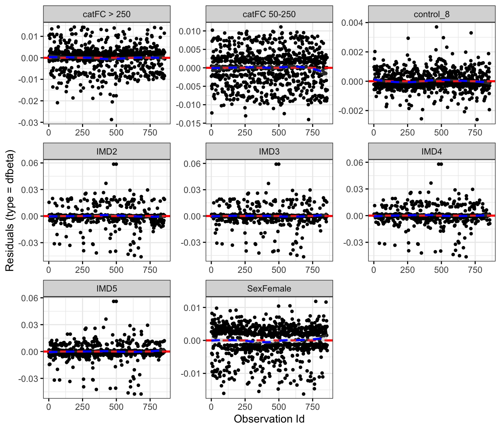
`geom_smooth()` using formula = 'y ~ x'
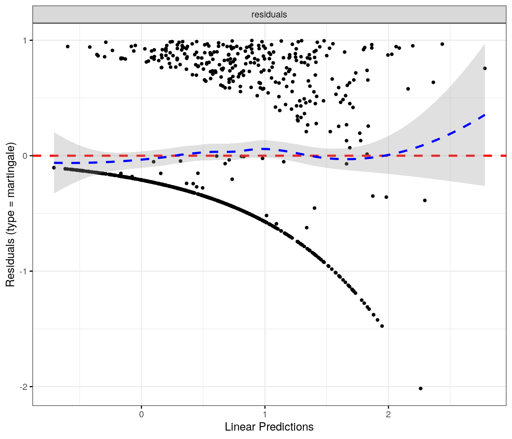
Code
fit<-survfit(Surv(hardflare_time, hardflare)~control_cat, data =flare.cd.df)p<-ggsurvplot(fit, data =flare.cd.df, conf.int =TRUE, pval =TRUE, pval.method =TRUE, ggtheme =theme_minimal(), risk.table =TRUE, legend.title ="IBD Control-8", palette =c("#1A8FE3", "#E76D83"), xlab ="Time from study recrutiment (days)", title ="Time to hard flare", break.time.by =500)cairo_pdf("plots/cd/hard-flare/ibd/control-8.pdf")pinvisible(dev.off())png("plots/cd/hard-flare/ibd/control-8.png", width =7, height =7, units ="in", res =300)pinvisible(dev.off())p
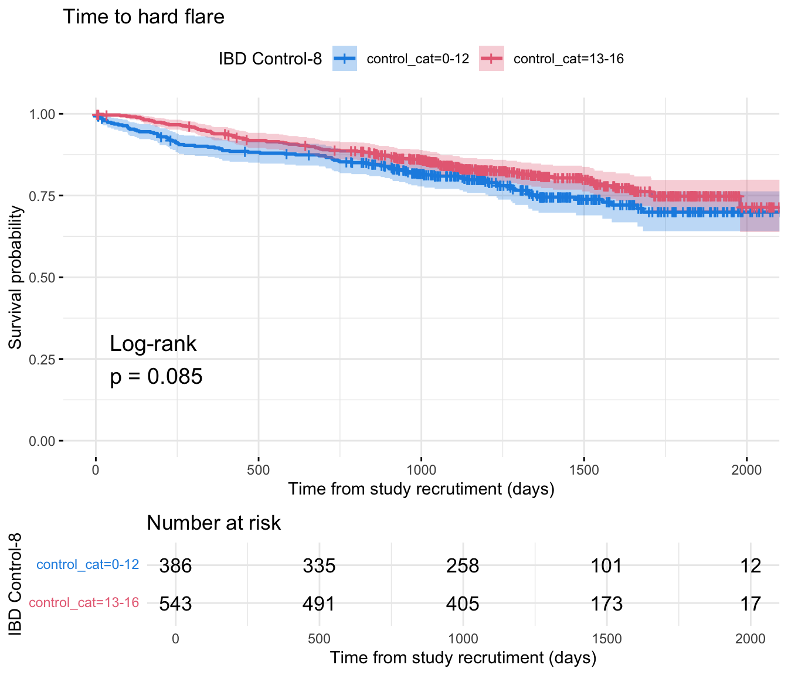
Code
fit.me<-coxph(Surv(hardflare_time, hardflare)~Sex+IMD+cat+control_8+frailty(SiteNo), control =coxph.control(outer.max =20), data =flare.cd.df)invisible(cox.summary(fit.me))
flare.uc.df$control_cat<-cut(flare.uc.df$control_8,c(0, 13, 16), labels =c("0-12", "13-16"), include.lowest =TRUE, right =FALSE)fit<-survfit(Surv(softflare_time, softflare)~control_cat, data =flare.uc.df)p<-ggsurvplot(fit, data =flare.uc.df, conf.int =TRUE, pval =TRUE, pval.method =TRUE, ggtheme =theme_minimal(), risk.table =TRUE, legend.title ="IBD Control-8", palette =c("#1A8FE3", "#E76D83"), xlab ="Time from study recrutiment (days)", title ="Time to clinical flare", break.time.by =200)cairo_pdf("plots/uc/soft-flare/ibd/control-8.pdf")pinvisible(dev.off())png("plots/uc/soft-flare/ibd/control-8.png", width =7, height =7, units ="in", res =300)pinvisible(dev.off())p
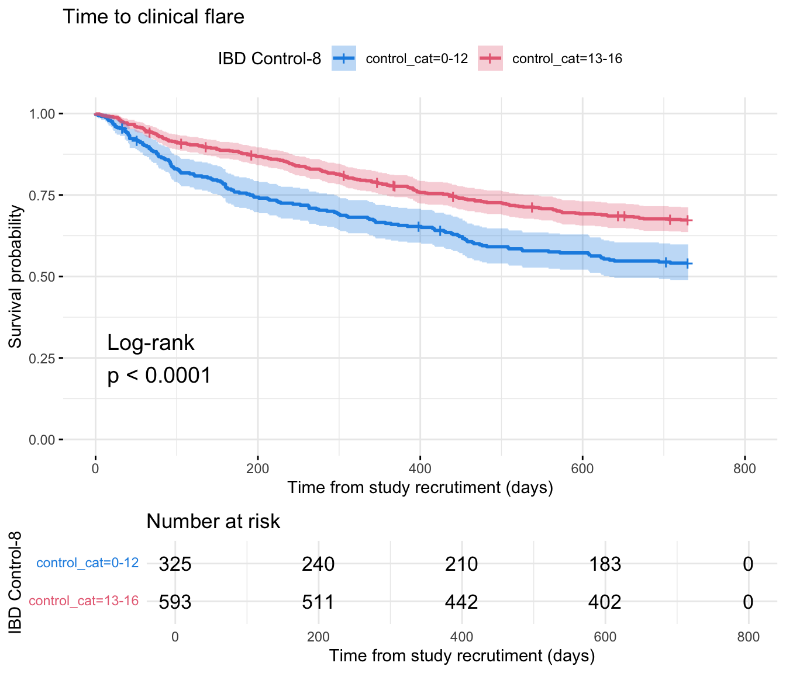
Code
fit.me<-coxph(Surv(softflare_time, softflare)~Sex+IMD+cat+control_8+frailty(SiteNo), control =coxph.control(outer.max =20), data =flare.uc.df)invisible(cox.summary(fit.me))
fit<-survfit(Surv(hardflare_time, hardflare)~control_cat, data =flare.uc.df)p<-ggsurvplot(fit, data =flare.uc.df, conf.int =TRUE, pval =TRUE, pval.method =TRUE, ggtheme =theme_minimal(), risk.table =TRUE, legend.title ="IBD Control-8", palette =c("#1A8FE3", "#E76D83"), xlab ="Time from study recrutiment (days)", title ="Time to hard flare", break.time.by =500)cairo_pdf("plots/uc/hard-flare/ibd/control-8.pdf")pinvisible(dev.off())png("plots/uc/hard-flare/ibd/control-8.png", width =7, height =7, units ="in", res =300)pinvisible(dev.off())p
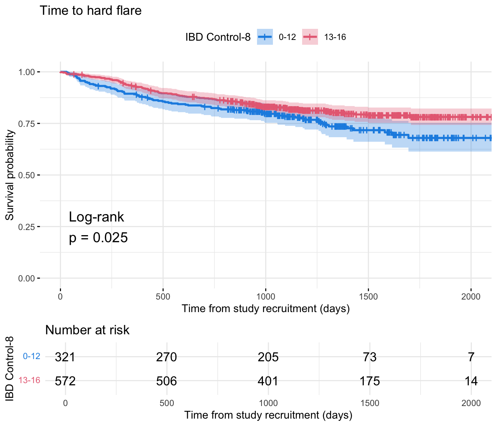
Code
fit.me<-coxph(Surv(hardflare_time, hardflare)~Sex+IMD+cat+control_8+frailty(SiteNo), control =coxph.control(outer.max =20), data =flare.uc.df)invisible(cox.summary(fit.me))
fit<-survfit(Surv(softflare_time, softflare)~vas_control, data =flare.cd.df)p<-ggsurvplot(fit, data =flare.cd.df, conf.int =TRUE, pval =TRUE, pval.method =TRUE, ggtheme =theme_minimal(), risk.table =TRUE, legend.title ="IBD Control VAS", palette =c("#1A8FE3", "#E76D83"), xlab ="Time from study recrutiment (days)", title ="Time to clinical flare", break.time.by =200)cairo_pdf("plots/cd/soft-flare/ibd/control-vas.pdf")pinvisible(dev.off())png("plots/cd/soft-flare/ibd/control-vas.png", width =7, height =7, units ="in", res =300)pinvisible(dev.off())p
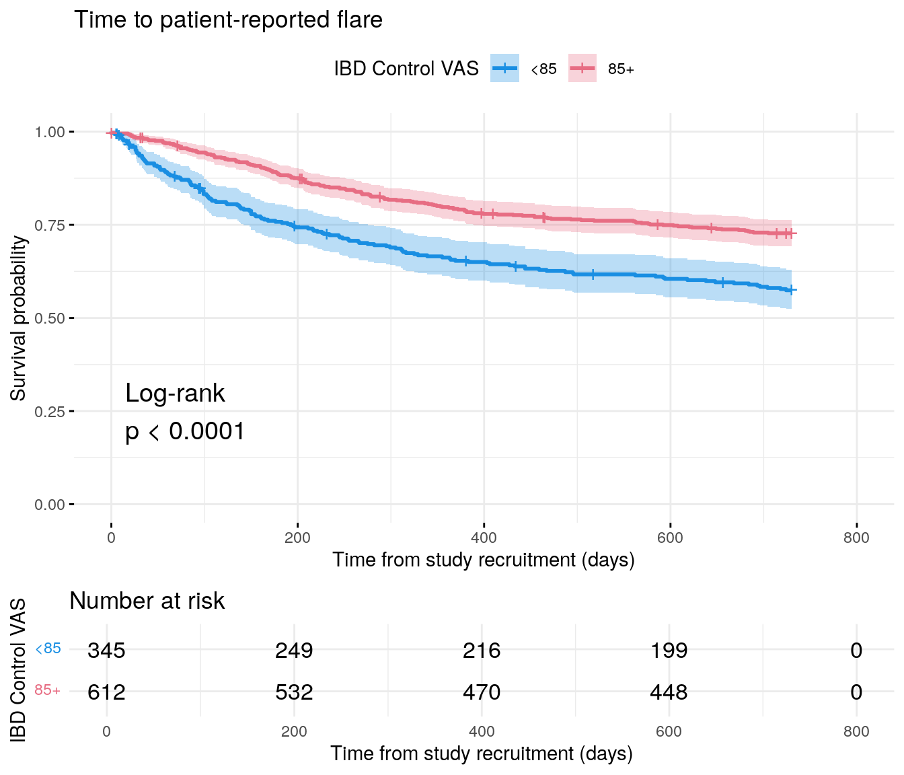
Code
fit.me<-coxph(Surv(softflare_time, softflare)~Sex+IMD+cat+vas_control+frailty(SiteNo), control =coxph.control(outer.max =20), data =flare.cd.df)invisible(cox.summary(fit.me))
fit<-survfit(Surv(hardflare_time, hardflare)~vas_control, data =flare.cd.df)p<-ggsurvplot(fit, data =flare.cd.df, conf.int =TRUE, pval =TRUE, pval.method =TRUE, ggtheme =theme_minimal(), risk.table =TRUE, legend.title ="IBD Control VAS", palette =c("#1A8FE3", "#E76D83"), xlab ="Time from study recrutiment (days)", title ="Time to hard flare", break.time.by =500)cairo_pdf("plots/cd/hard-flare/ibd/control-vas.pdf")pinvisible(dev.off())png("plots/cd/hard-flare/ibd/control-vas.png", width =7, height =7, units ="in", res =300)pinvisible(dev.off())p
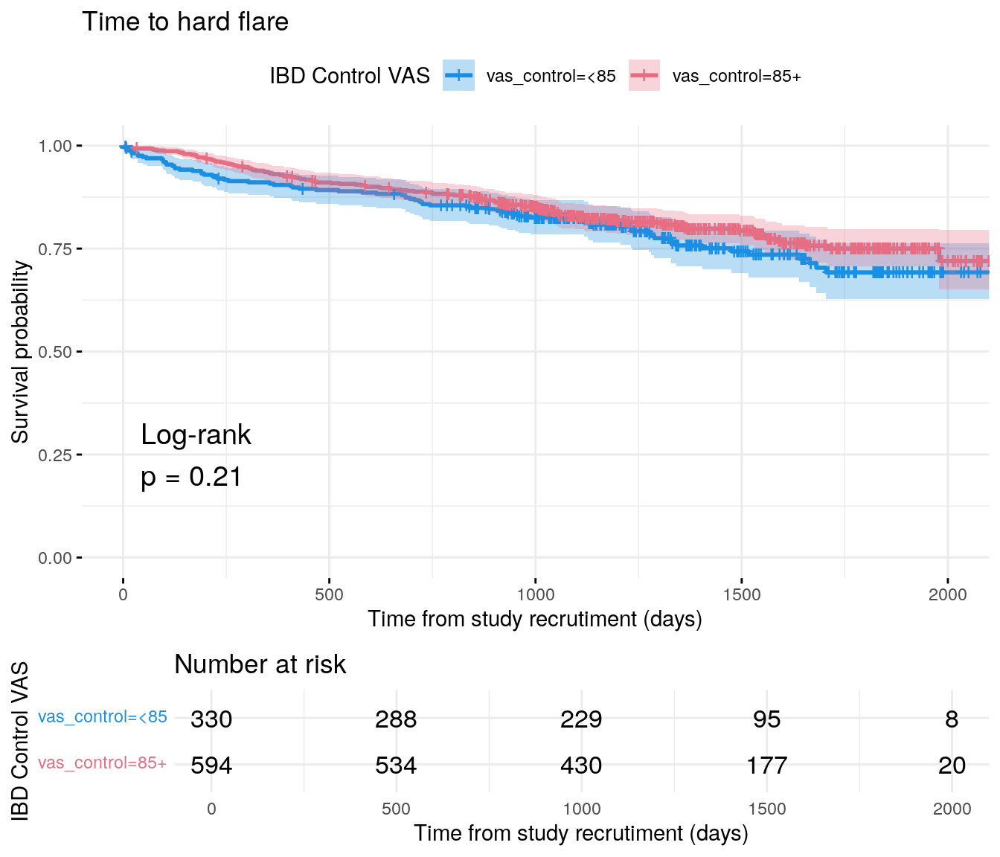
Code
fit.me<-coxph(Surv(hardflare_time, hardflare)~Sex+IMD+cat+vas_control+frailty(SiteNo), control =coxph.control(outer.max =20), data =flare.cd.df)invisible(cox.summary(fit.me))
fit<-survfit(Surv(softflare_time, softflare)~vas_control, data =flare.uc.df)p<-ggsurvplot(fit, data =flare.uc.df, conf.int =TRUE, pval =TRUE, pval.method =TRUE, ggtheme =theme_minimal(), risk.table =TRUE, legend.title ="IBD Control VAS", palette =c("#1A8FE3", "#E76D83"), xlab ="Time from study recrutiment (days)", title ="Time to clinical flare", break.time.by =200)cairo_pdf("plots/uc/soft-flare/ibd/control-vas.pdf")pinvisible(dev.off())png("plots/uc/soft-flare/ibd/control-vas.png", width =7, height =7, units ="in", res =300)pinvisible(dev.off())p
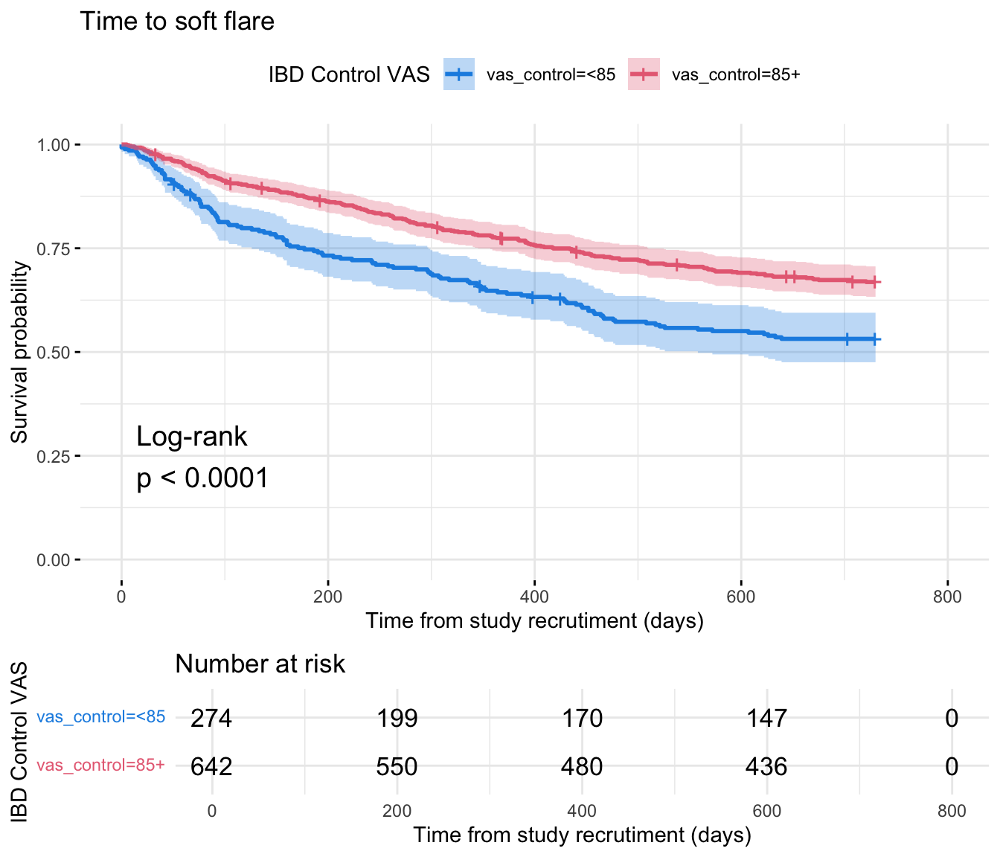
Code
fit.me<-coxph(Surv(softflare_time, softflare)~Sex+IMD+cat+vas_control+frailty(SiteNo), control =coxph.control(outer.max =20), data =flare.uc.df)invisible(cox.summary(fit.me))
fit<-survfit(Surv(hardflare_time, hardflare)~vas_control, data =flare.uc.df)p<-ggsurvplot(fit, data =flare.uc.df, conf.int =TRUE, pval =TRUE, pval.method =TRUE, ggtheme =theme_minimal(), risk.table =TRUE, legend.title ="IBD Control VAS", palette =c("#1A8FE3", "#E76D83"), xlab ="Time from study recrutiment (days)", title ="Time to hard flare", break.time.by =200)cairo_pdf("plots/uc/hard-flare/ibd/control-vas.pdf")pinvisible(dev.off())png("plots/uc/hard-flare/ibd/control-vas.png", width =7, height =7, units ="in", res =300)pinvisible(dev.off())p
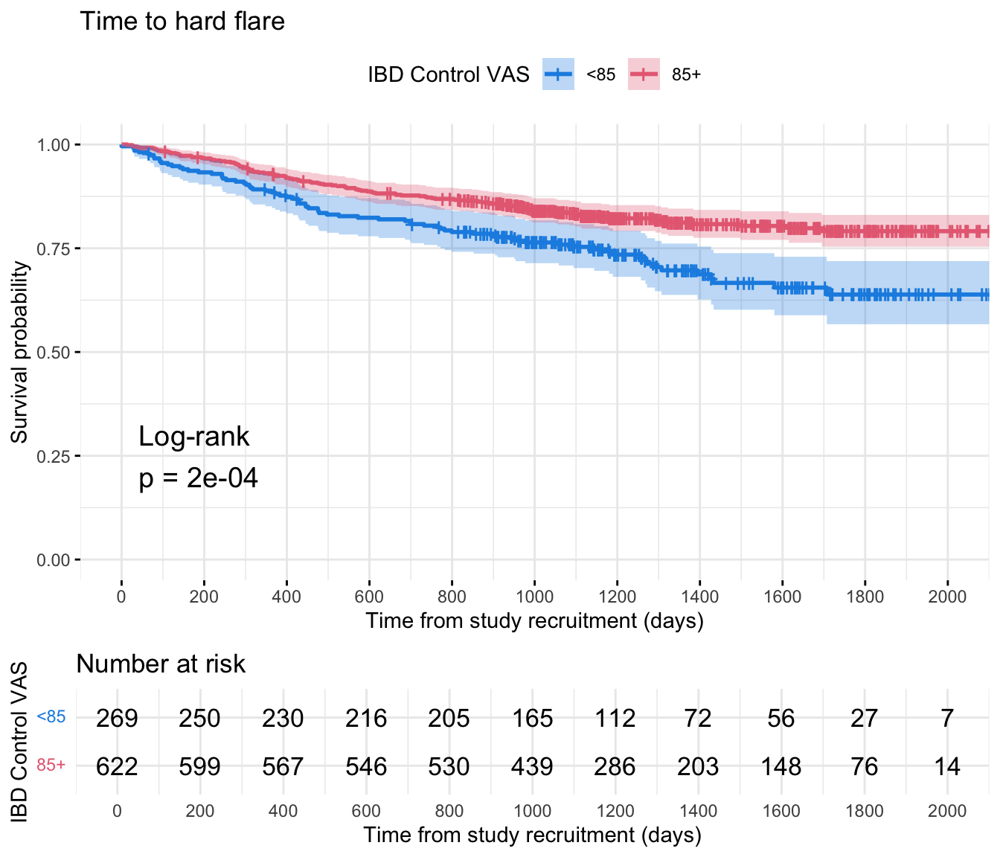
Code
fit.me<-coxph(Surv(hardflare_time, hardflare)~Sex+IMD+cat+vas_control+frailty(SiteNo), control =coxph.control(outer.max =20), data =flare.uc.df)invisible(cox.summary(fit.me))
fit<-survfit(Surv(softflare_time, softflare)~Surgery, data =flare.cd.df)p<-ggsurvplot(fit, data =flare.cd.df, conf.int =TRUE, pval =TRUE, pval.method =TRUE, ggtheme =theme_minimal(), risk.table =TRUE, legend.title ="Previous surgery", palette =c("#3DDC97", "#DD7373"), xlab ="Time from study recrutiment (days)", title ="Time to clinical flare")cairo_pdf("plots/cd/soft-flare/ibd/surgery.pdf")pinvisible(dev.off())png("plots/cd/soft-flare/ibd/surgery.png", width =7, height =7, units ="in", res =300)pinvisible(dev.off())p
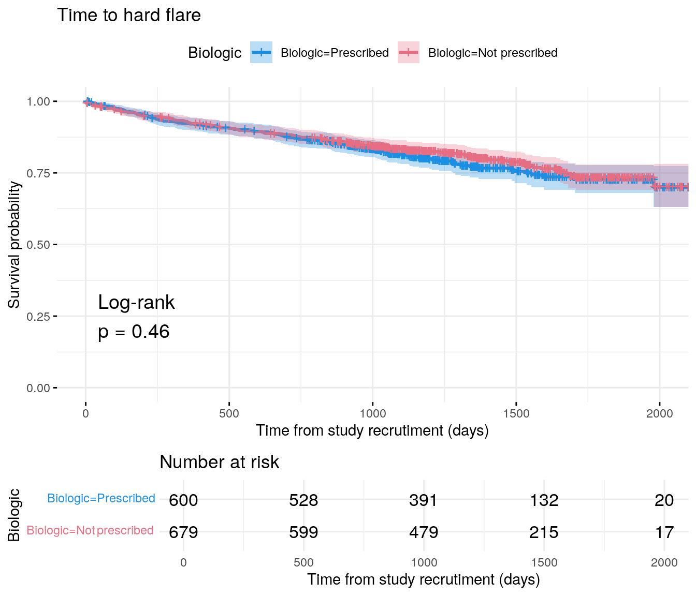
Code
fit.me<-coxph(Surv(softflare_time, softflare)~Sex+cat+IMD+Surgery+frailty(SiteNo), control =coxph.control(outer.max =20), data =flare.cd.df)invisible(cox.summary(fit.me))
fit<-survfit(Surv(hardflare_time, hardflare)~Surgery, data =flare.cd.df)p<-ggsurvplot(fit, data =flare.cd.df, conf.int =TRUE, pval =TRUE, pval.method =TRUE, ggtheme =theme_minimal(), risk.table =TRUE, legend.title ="Previous surgery", palette =c("#3DDC97", "#DD7373"), xlab ="Time from study recrutiment (days)", title ="Time to hard flare")cairo_pdf("plots/cd/hard-flare/ibd/surgery.pdf")pinvisible(dev.off())png("plots/cd/hard-flare/ibd/surgery.png", width =7, height =7, units ="in", res =300)pinvisible(dev.off())p
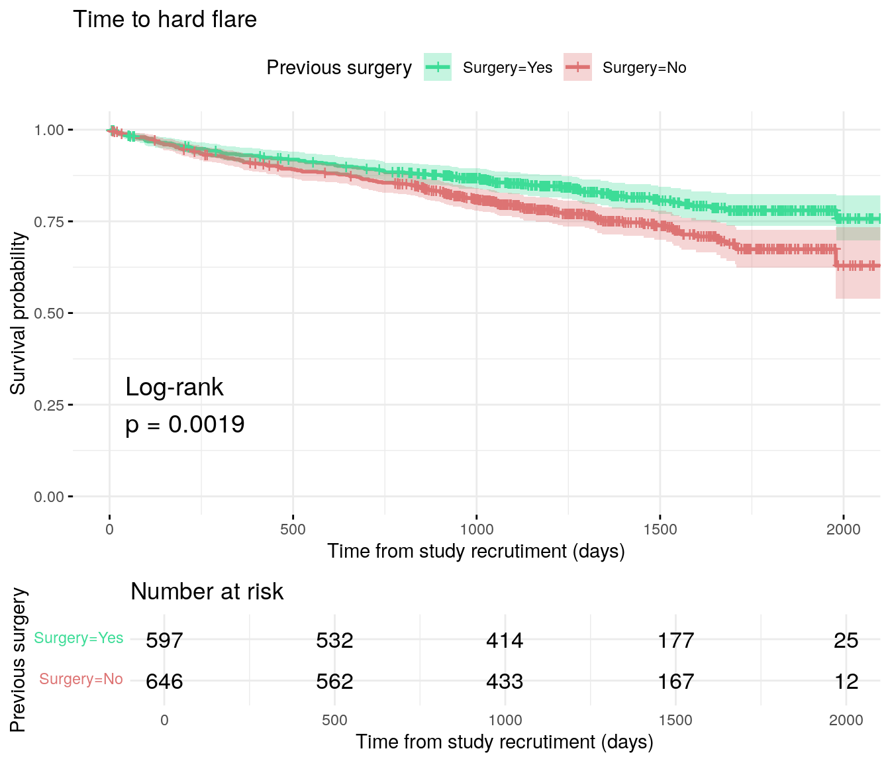
Code
fit.me<-coxph(Surv(hardflare_time, hardflare)~Sex+cat+IMD+Surgery+frailty(SiteNo), control =coxph.control(outer.max =20), data =flare.cd.df)invisible(cox.summary(fit.me))
fit<-survfit(Surv(softflare_time, softflare)~Location, data =flare.cd.df)p<-ggsurvplot(fit, data =flare.cd.df, conf.int =TRUE, pval =TRUE, pval.method =TRUE, ggtheme =theme_minimal(), risk.table =TRUE, legend.title ="Montreal location", palette =c("#3B3561", "#5BC0EB", "#FFD166", "#E4572E"), xlab ="Time from study recrutiment (days)", title ="Time to clinical flare")cairo_pdf("plots/cd/soft-flare/ibd/location.pdf")pinvisible(dev.off())png("plots/cd/soft-flare/ibd/location.png", width =7, height =7, units ="in", res =300)pinvisible(dev.off())p
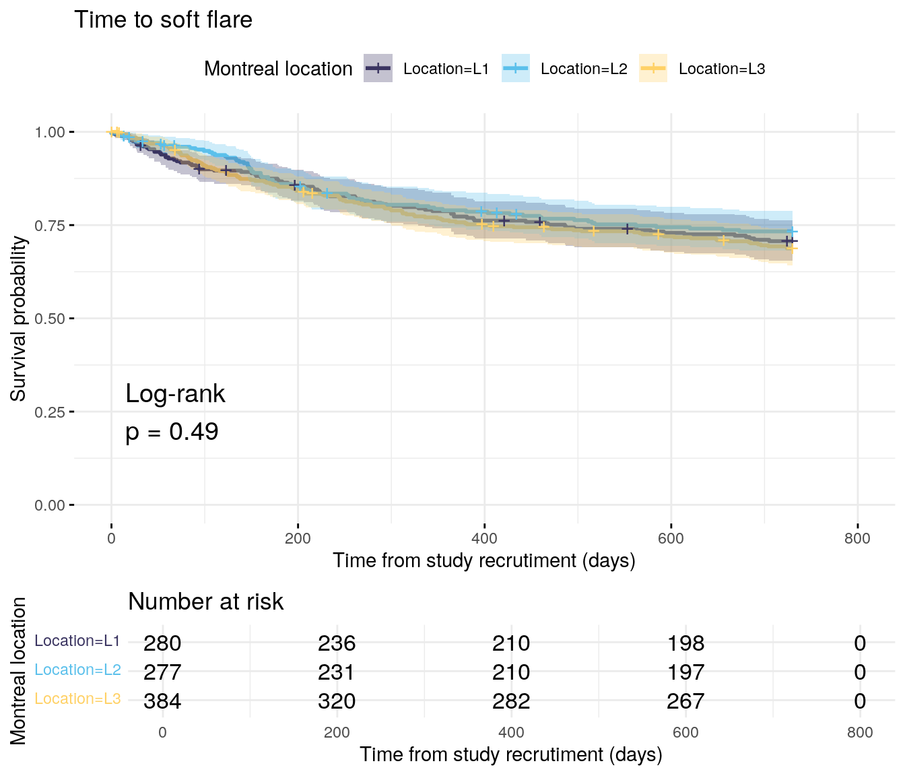
Code
fit.me<-coxph(Surv(softflare_time, softflare)~Sex+cat+IMD+Location+frailty(SiteNo), control =coxph.control(outer.max =20), data =flare.cd.df)invisible(cox.summary(fit.me))
fit<-survfit(Surv(hardflare_time, hardflare)~Location, data =flare.cd.df)p<-ggsurvplot(fit, data =flare.cd.df, conf.int =TRUE, pval =TRUE, pval.method =TRUE, ggtheme =theme_minimal(), risk.table =TRUE, legend.title ="Montreal location", palette =c("#3B3561", "#5BC0EB", "#FFD166", "#E4572E"), xlab ="Time from study recrutiment (days)", title ="Time to hard flare")cairo_pdf("plots/cd/hard-flare/ibd/location.pdf")pinvisible(dev.off())png("plots/cd/hard-flare/ibd/location.png", width =7, height =7, units ="in", res =300)pinvisible(dev.off())p
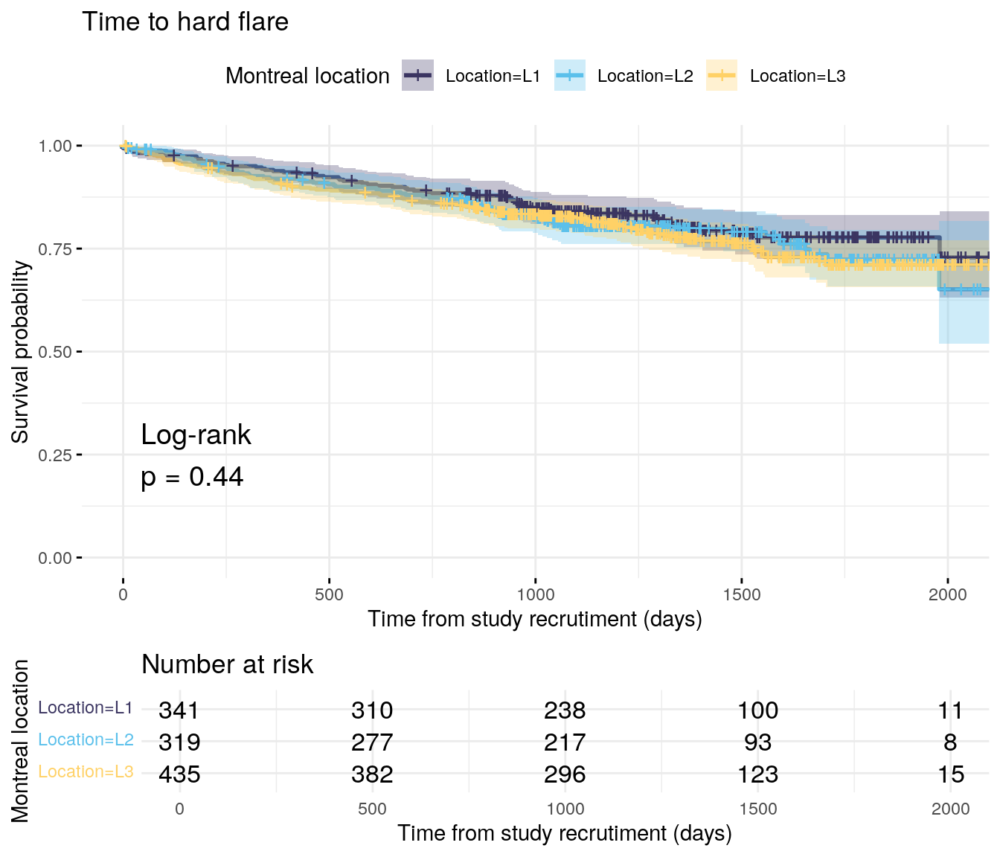
Code
fit.me<-coxph(Surv(hardflare_time, hardflare)~Sex+cat+IMD+Location+frailty(SiteNo), control =coxph.control(outer.max =20), data =flare.cd.df)invisible(cox.summary(fit.me))
fit<-survfit(Surv(softflare_time, softflare)~L4, data =flare.cd.df)p<-ggsurvplot(fit, data =flare.cd.df, conf.int =TRUE, pval =TRUE, pval.method =TRUE, ggtheme =theme_minimal(), risk.table =TRUE, legend.title ="Montreal L4 presence", palette =c("#3DDC97", "#DD7373"), xlab ="Time from study recrutiment (days)", title ="Time to clinical flare")cairo_pdf("plots/cd/soft-flare/ibd/l4.pdf")pinvisible(dev.off())png("plots/cd/soft-flare/ibd/l4.png", width =7, height =7, units ="in", res =300)pinvisible(dev.off())p
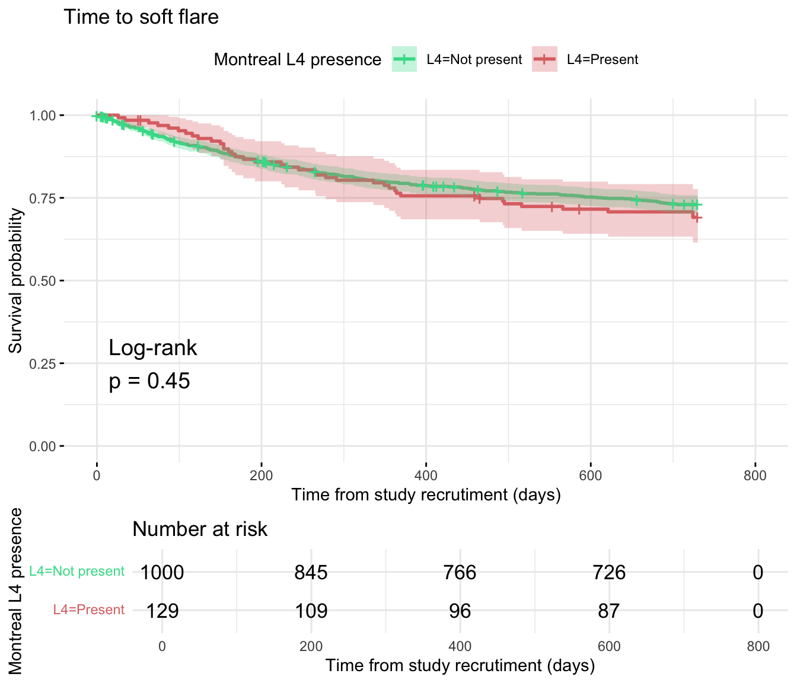
Code
fit.me<-coxph(Surv(softflare_time, softflare)~Sex+cat+IMD+L4+frailty(SiteNo), control =coxph.control(outer.max =20), data =flare.cd.df)invisible(cox.summary(fit.me))
fit<-survfit(Surv(hardflare_time, hardflare)~L4, data =flare.cd.df)p<-ggsurvplot(fit, data =flare.cd.df, conf.int =TRUE, pval =TRUE, pval.method =TRUE, ggtheme =theme_minimal(), risk.table =TRUE, legend.title ="Montreal L4 presence", palette =c("#3DDC97", "#DD7373"), xlab ="Time from study recrutiment (days)", title ="Time to hard flare")cairo_pdf("plots/cd/hard-flare/ibd/l4.pdf")pinvisible(dev.off())png("plots/cd/hard-flare/ibd/l4.png", width =7, height =7, units ="in", res =300)pinvisible(dev.off())p
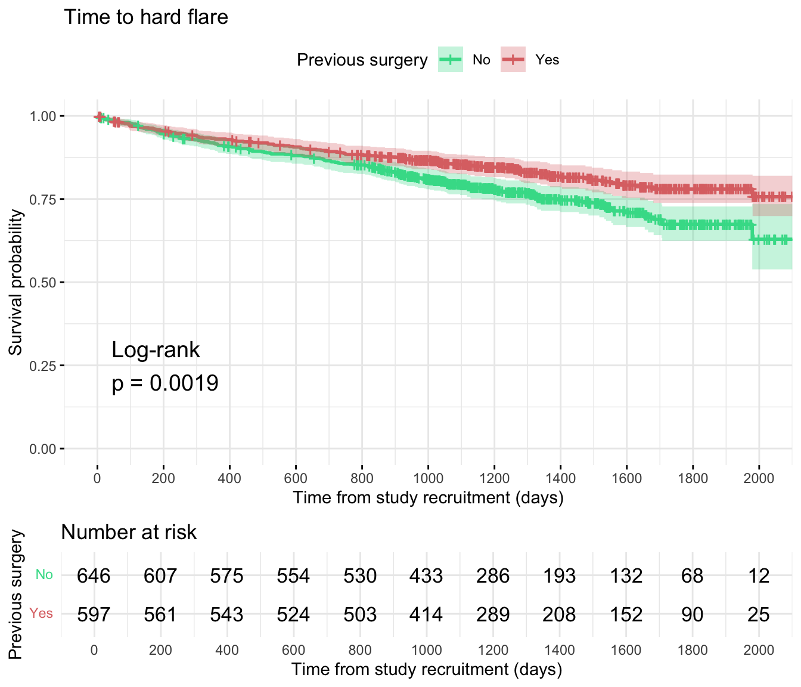
Code
fit.me<-coxph(Surv(hardflare_time, hardflare)~Sex+cat+IMD+L4+frailty(SiteNo), control =coxph.control(outer.max =20), data =flare.cd.df)invisible(cox.summary(fit.me))
fit<-survfit(Surv(softflare_time, softflare)~Behaviour, data =flare.cd.df)p<-ggsurvplot(fit, data =flare.cd.df, conf.int =TRUE, pval =TRUE, pval.method =TRUE, ggtheme =theme_minimal(), risk.table =TRUE, legend.title ="Montreal behaviour", palette =c("#3DDC97", "#FFD166", "#DD7373"), xlab ="Time from study recrutiment (days)", title ="Time to clinical flare")cairo_pdf("plots/cd/soft-flare/ibd/behaviour.pdf")pinvisible(dev.off())png("plots/cd/soft-flare/ibd/behaviour.png", width =7, height =7, units ="in", res =300)pinvisible(dev.off())p
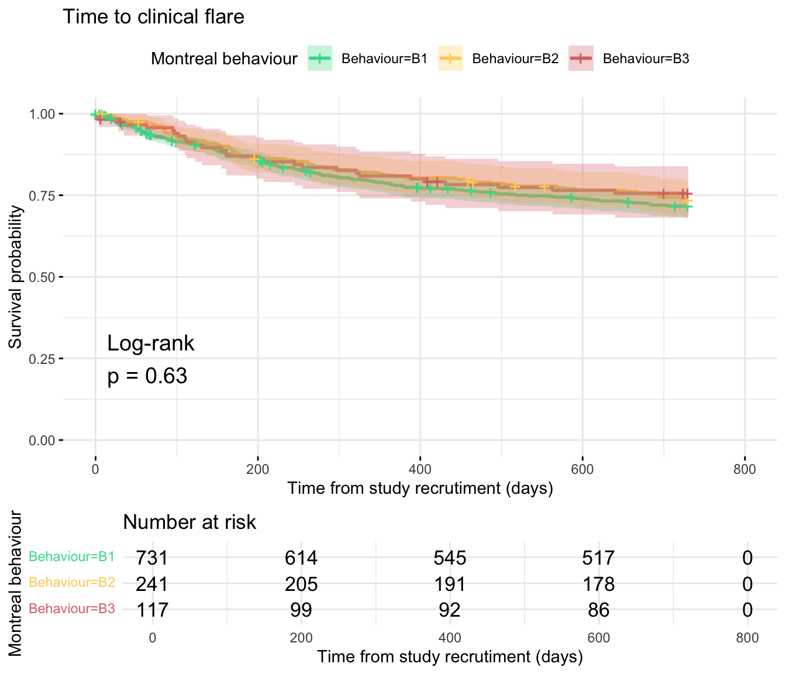
Code
fit.me<-coxph(Surv(softflare_time, softflare)~Sex+cat+IMD+Behaviour+frailty(SiteNo), control =coxph.control(outer.max =20), data =flare.cd.df)invisible(cox.summary(fit.me))
fit<-survfit(Surv(hardflare_time, hardflare)~Behaviour, data =flare.cd.df)p<-ggsurvplot(fit, data =flare.cd.df, conf.int =TRUE, pval =TRUE, pval.method =TRUE, ggtheme =theme_minimal(), risk.table =TRUE, legend.title ="Montreal behaviour", palette =c("#3DDC97", "#FFD166", "#DD7373"), xlab ="Time from study recrutiment (days)", title ="Time to hard flare")cairo_pdf("plots/cd/hard-flare/ibd/behaviour.pdf")pinvisible(dev.off())png("plots/cd/hard-flare/ibd/behaviour.png", width =7, height =7, units ="in", res =300)pinvisible(dev.off())p
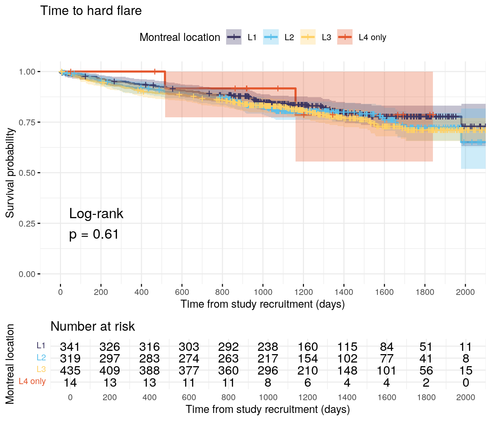
Code
fit.me<-coxph(Surv(hardflare_time, hardflare)~Sex+cat+IMD+Behaviour+frailty(SiteNo), control =coxph.control(outer.max =20), data =flare.cd.df)invisible(cox.summary(fit.me))
fit<-survfit(Surv(softflare_time, softflare)~Perianal, data =flare.cd.df)p<-ggsurvplot(fit, data =flare.cd.df, conf.int =TRUE, pval =TRUE, pval.method =TRUE, ggtheme =theme_minimal(), risk.table =TRUE, legend.title ="Perianal disease", palette =c("#3DDC97", "#DD7373"), xlab ="Time from study recrutiment (days)", title ="Time to clinical flare")cairo_pdf("plots/cd/soft-flare/ibd/perinal.pdf")pinvisible(dev.off())png("plots/cd/soft-flare/ibd/perinal.png", width =7, height =7, units ="in", res =300)pinvisible(dev.off())p
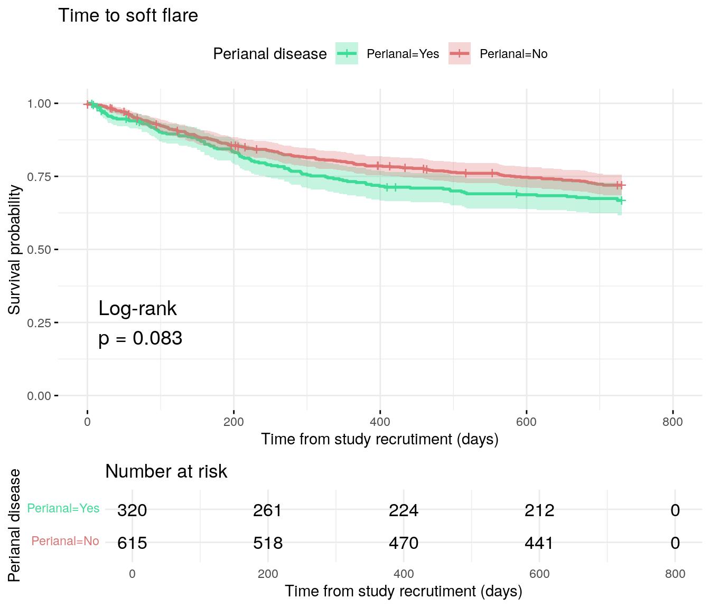
Code
fit.me<-coxph(Surv(softflare_time, softflare)~Sex+cat+IMD+Perianal+frailty(SiteNo), control =coxph.control(outer.max =20), data =flare.cd.df)invisible(cox.summary(fit.me))
fit<-survfit(Surv(hardflare_time, hardflare)~Perianal, data =flare.cd.df)p<-ggsurvplot(fit, data =flare.cd.df, conf.int =TRUE, pval =TRUE, pval.method =TRUE, ggtheme =theme_minimal(), risk.table =TRUE, legend.title ="Perianal disease", palette =c("#3DDC97", "#DD7373"), xlab ="Time from study recrutiment (days)", title ="Time to hard flare")cairo_pdf("plots/cd/hard-flare/ibd/perinal.pdf")pinvisible(dev.off())png("plots/cd/hard-flare/ibd/perinal.png", width =7, height =7, units ="in", res =300)pinvisible(dev.off())p
Code
fit.me<-coxph(Surv(hardflare_time, hardflare)~Sex+cat+IMD+Perianal+frailty(SiteNo), control =coxph.control(outer.max =20), data =flare.cd.df)invisible(cox.summary(fit.me))
fit<-survfit(Surv(softflare_time, softflare)~Extent, data =flare.uc.df)p<-ggsurvplot(fit, data =flare.uc.df, conf.int =TRUE, pval =TRUE, pval.method =TRUE, ggtheme =theme_minimal(), risk.table =TRUE, legend.title ="Montreal extent", palette =c("#3DDC97", "orange", "#DD7373"), xlab ="Time from study recrutiment (days)", title ="Time to clinical flare")cairo_pdf("plots/uc/soft-flare/ibd/extent.pdf")pinvisible(dev.off())png("plots/uc/soft-flare/ibd/extent.png", width =7, height =7, units ="in", res =300)pinvisible(dev.off())p
Code
fit.me<-coxph(Surv(softflare_time, softflare)~Sex+cat+IMD+Extent+frailty(SiteNo), control =coxph.control(outer.max =20), data =flare.uc.df)invisible(cox.summary(fit.me))
fit<-survfit(Surv(hardflare_time, hardflare)~Extent, data =flare.uc.df)p<-ggsurvplot(fit, data =flare.uc.df, conf.int =TRUE, pval =TRUE, pval.method =TRUE, ggtheme =theme_minimal(), risk.table =TRUE, legend.title ="Montreal extent", palette =c("#3DDC97", "orange", "#DD7373"), xlab ="Time from study recrutiment (days)", title ="Time to hard flare")cairo_pdf("plots/uc/hard-flare/ibd/extent.pdf")pinvisible(dev.off())png("plots/uc/hard-flare/ibd/extent.png", width =7, height =7, units ="in", res =300)pinvisible(dev.off())p
Code
fit.me<-coxph(Surv(hardflare_time, hardflare)~Sex+cat+IMD+Extent+frailty(SiteNo), control =coxph.control(outer.max =20), data =flare.uc.df)invisible(cox.summary(fit.me))
fit<-survfit(Surv(softflare_time, softflare)~Mayo_cat, data =flare.uc.df)p<-ggsurvplot(fit, data =flare.uc.df, conf.int =TRUE, pval =TRUE, pval.method =TRUE, ggtheme =theme_minimal(), risk.table =TRUE, legend.title ="Mayo score", palette =c("#3DDC97", "orange", "#DD7373"), xlab ="Time from study recrutiment (days)", title ="Time to clinical flare")cairo_pdf("plots/uc/soft-flare/ibd/mayo.pdf")pinvisible(dev.off())png("plots/uc/soft-flare/ibd/mayo.png", width =7, height =7, units ="in", res =300)pinvisible(dev.off())p
Code
fit.me<-coxph(Surv(softflare_time, softflare)~Sex+cat+Mayo+Extent+frailty(SiteNo), control =coxph.control(outer.max =20), data =flare.uc.df)invisible(cox.summary(fit.me))
fit<-survfit(Surv(hardflare_time, hardflare)~Mayo_cat, data =flare.uc.df)p<-ggsurvplot(fit, data =flare.uc.df, conf.int =TRUE, pval =TRUE, pval.method =TRUE, ggtheme =theme_minimal(), risk.table =TRUE, legend.title ="Mayo score", palette =c("#3DDC97", "orange", "#DD7373"), xlab ="Time from study recrutiment (days)", title ="Time to hard flare")cairo_pdf("plots/uc/hard-flare/ibd/mayo.pdf")pinvisible(dev.off())png("plots/uc/hard-flare/ibd/mayo.png", width =7, height =7, units ="in", res =300)pinvisible(dev.off())p
Code
fit.me<-coxph(Surv(hardflare_time, hardflare)~Sex+cat+IMD+Mayo+frailty(SiteNo), control =coxph.control(outer.max =20), data =flare.uc.df)invisible(cox.summary(fit.me))